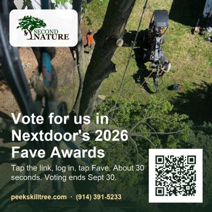
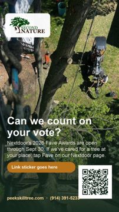
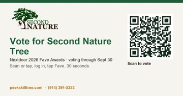
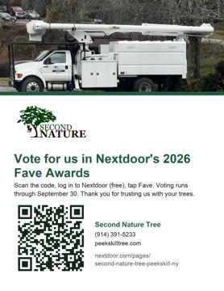
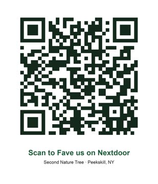

Second Nature Tree · everything to send, in one place. Nothing here sends itself.
Voting open Sept 9 – Sept 30, 2026This is our public Nextdoor page. A neighbor taps it, logs in (free), then taps Fave. That is the vote.
Open our Nextdoor pageOpen Jobber → Marketing → Email Campaigns → New Campaign → Start from scratch. Paste each block into its field. Review, then Send.
All clients with an email address. Optional: filter to past clients only, exclude leads.
Would you give us a quick vote? Takes 30 seconds.
Peekskill neighbors are voting. Can we count on yours?
Hi there, Nextdoor's 2026 Fave Awards are open, and neighbors across Peekskill and Northern Westchester are voting for their favorite local businesses through September 30. If we've ever taken care of a tree for you, we'd be grateful for a quick vote. It takes about 30 seconds: 1. Tap the button below. It opens our Nextdoor page. 2. Log in or sign up on Nextdoor (it's free). 3. Tap "Fave" on our page. That's it. Every vote helps a small, local crew get found by more neighbors like you. Thank you for trusting us with your trees. Doug, Catherine and the Second Nature Tree crew (914) 391-5233 peekskilltree.com
Vote for Second Nature Tree
https://nextdoor.com/pages/second-nature-tree-peekskill-ny/
Post on facebook.com/peekskilltree with a crew or job photo.
Peekskill neighbors are voting for their favorite local businesses in Nextdoor's 2026 Fave Awards, and we'd love your vote. If we've ever taken care of a tree for you, it takes about 30 seconds: 1. Tap the link below. 2. Log in or sign up on Nextdoor (free). 3. Tap "Fave." Every vote helps a small, local crew get found by more neighbors. Thank you for trusting us with your trees. Vote here: https://nextdoor.com/pages/second-nature-tree-peekskill-ny/ Voting runs through Sept 30.
Post on @secondnaturetree. Captions can't be tapped, so put the vote link in the bio and on a story link sticker.
Neighbors are voting in Nextdoor's 2026 Fave Awards and we'd love yours. If we've ever cared for a tree at your place: open Nextdoor, find Second Nature Tree, tap "Fave." 30 seconds, free, done by Sept 30. Link in bio. Thank you, Peekskill. #PeekskillNY #Peekskill #Cortlandt #Yorktown #Croton #TreeService #Arborist #HudsonValley #ShopLocal #NextdoorFaves
Thank you to every neighbor who's trusted us with their trees this year. Nextdoor's 2026 Fave Awards are open through Sept 30. If we've done work for you and you'd recommend us, a "Fave" on our page goes a long way for a small local crew. Questions about a tree? We're at (914) 391-5233.
Hi, it's Doug and Catherine at Second Nature Tree. Nextdoor is running its Fave Awards through 9/30. If you'd recommend us, tapping "Fave" here takes 30 seconds: https://nextdoor.com/pages/second-nature-tree-peekskill-ny/ Thank you!
Tap a picture to open it full size, then long-press to save to your phone. Each one has the vote link as a QR code.

Square post
Story
Link card
Print sheet
QR code onlyNextdoor's own kit (their graphics and the official QR) is in the business dashboard: open the campaign toolkit (needs the Nextdoor login).
Prepared Sept 12, 2026. Unlisted page. Doug or Catherine sends everything by hand.